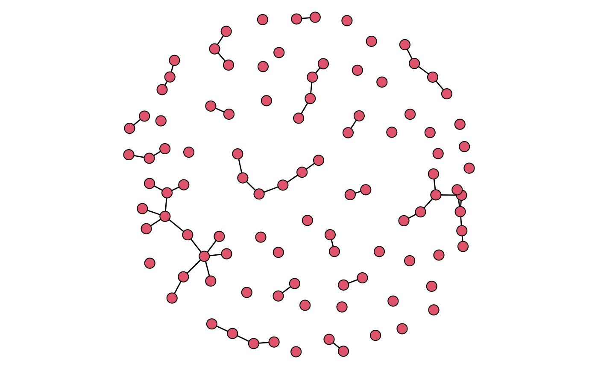
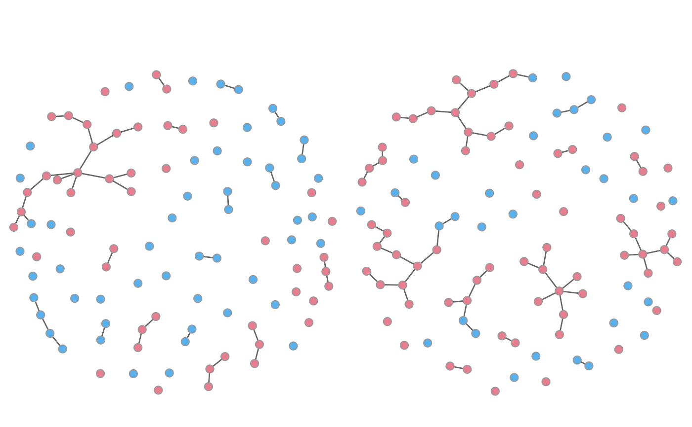
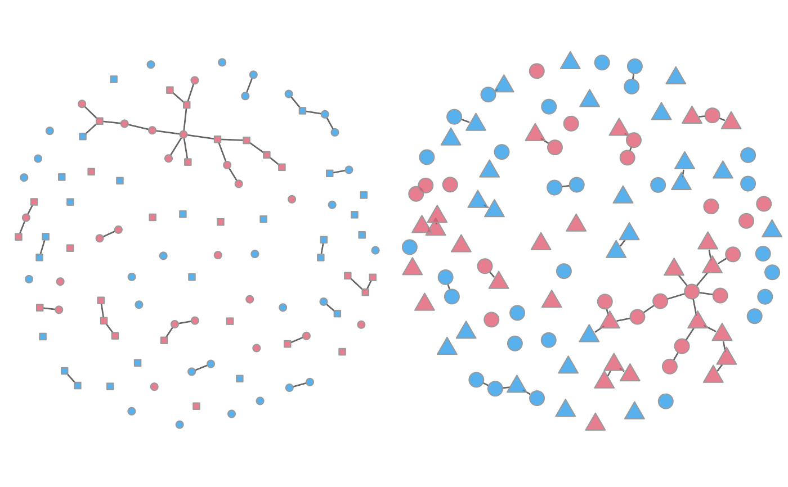
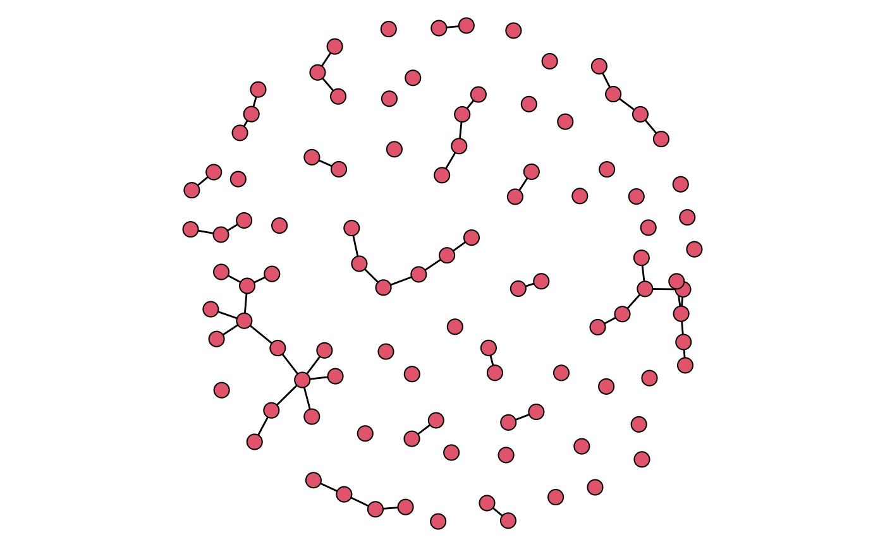
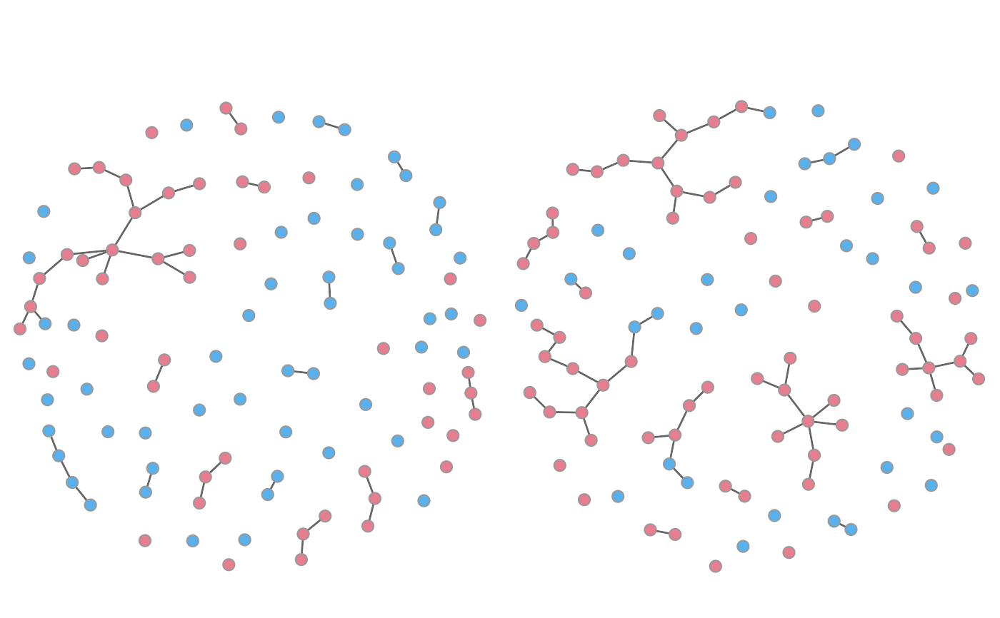
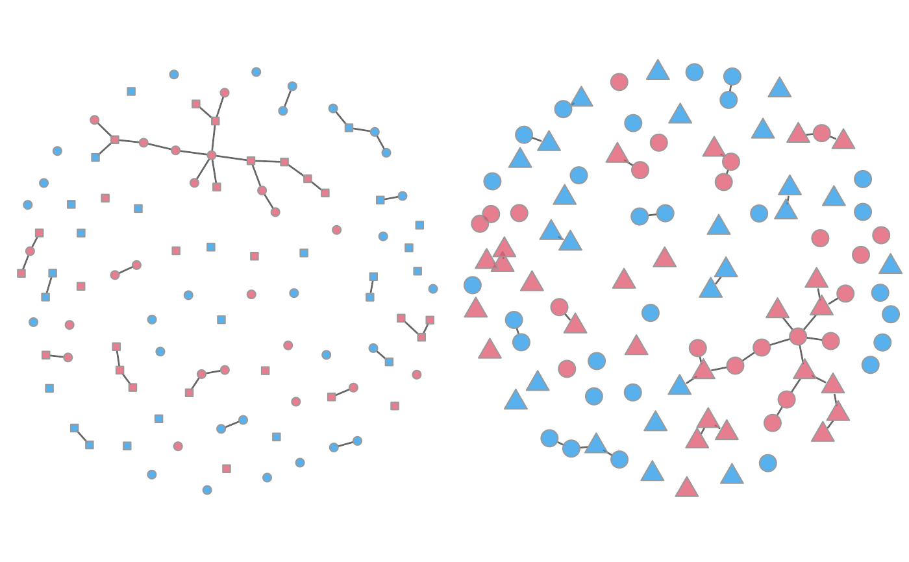

Plots epidemiological and network data from a stochastic network
model simulated with netsim.
Usage
# S3 method for class 'netsim'
plot(
x,
type = "epi",
y = NULL,
popfrac = FALSE,
sim.lines = FALSE,
sims = NULL,
sim.col = NULL,
sim.lwd = NULL,
sim.alpha = NULL,
mean.line = TRUE,
mean.smooth = TRUE,
mean.col = NULL,
mean.lwd = 2,
mean.lty = 1,
qnts = 0.5,
qnts.col = NULL,
qnts.alpha = 0.5,
qnts.smooth = TRUE,
legend = NULL,
leg.cex = 0.8,
grid = FALSE,
add = FALSE,
network = 1,
at = 1,
col.status = FALSE,
shp.g2 = NULL,
vertex.cex = NULL,
stats = NULL,
targ.line = TRUE,
targ.col = NULL,
targ.lwd = 2,
targ.lty = 2,
plots.joined = NULL,
duration.imputed = TRUE,
method = "l",
main = NULL,
xlim = NULL,
xlab = NULL,
ylim = NULL,
ylab = NULL,
...
)Arguments
- x
An
EpiModelmodel object of classnetsim.- type
Type of plot:
"epi"for epidemic model results,"network"for a static network plot (plot.network), or"formation","duration", or"dissolution"for network formation, duration, or dissolution statistics.- y
Output compartments or flows from
netsimobject to plot.- popfrac
If
TRUE, plot prevalence of values rather than numbers (see details).- sim.lines
If
TRUE, plot individual simulation lines. Default is to plot lines for one-group models but not for two-group models.- sims
If
type="epi"or"formation", a vector of simulation numbers to plot. Iftype="network", a single simulation number for which to plot the network, or else"min"to plot the simulation number with the lowest disease prevalence,"max"for the simulation with the highest disease prevalence, or"mean"for the simulation with the prevalence closest to the mean across simulations at the specified time step.- sim.col
Vector of any standard R color format for simulation lines.
- sim.lwd
Line width for simulation lines.
- sim.alpha
Transparency level for simulation lines, where 0 = transparent and 1 = opaque (see
adjustcolorfunction).- mean.line
If
TRUE, plot mean of simulations across time.- mean.smooth
If
TRUE, use a loess smoother on the mean line.- mean.col
Vector of any standard R color format for mean lines.
- mean.lwd
Line width for mean lines.
- mean.lty
Line type for mean lines.
- qnts
If numeric, plot polygon of simulation quantiles based on the range implied by the argument (see details). If
FALSE, suppress polygon from plot.- qnts.col
Vector of any standard R color format for polygons.
- qnts.alpha
Transparency level for quantile polygons, where 0 = transparent and 1 = opaque (see
adjustcolorfunction).- qnts.smooth
If
TRUE, use a loess smoother on quantile polygons.- legend
If
TRUE, plot default legend.- leg.cex
Legend scale size.
- grid
If
TRUE, a grid is added to the background of plot (seegridfor details), with default of nx by ny.- add
If
TRUE, new plot window is not called and lines are added to existing plot window.- network
Network number, for simulations with multiple networks representing the population.
- at
If
type = "network", time step for network graph.- col.status
If
TRUEandtype="network", automatic disease status colors (blue = susceptible, red = infected, green = recovered).- shp.g2
If
type = "network"andxis for a two-group model, shapes for the Group 2 vertices, with acceptable inputs of "triangle" and "square". Group 1 vertices will remain circles.- vertex.cex
Relative size of plotted vertices if
type="network", with implicit default of 1.- stats
If
type="formation","duration","dissolution", statistics to plot. Fortype = "formation",statsare among those specified innwstats.formulaofcontrol.net; fortype = "duration", "dissolution",statsare among those of the dissolution model (withoutoffset()). The default is to plot all statistics.- targ.line
If
TRUE, plot target or expected value line for the statistic of interest.- targ.col
Vector of standard R colors for target statistic lines, with default colors based on
RColorBrewercolor palettes.- targ.lwd
Line width for the line showing the target statistic values.
- targ.lty
Line type for the line showing the target statistic values.
- plots.joined
If
TRUEandtype="formation","duration","dissolution", combine all statistics in one plot, versus one plot per statistic ifFALSE.- duration.imputed
If
type = "duration", a logical indicating whether or not to impute starting times for relationships extant at the start of the simulation. Defaults toTRUEwhentype = "duration".- method
Plot method for
type="formation", "duration", "dissolution", with options of"l"for line plots and"b"for box plots.- main
a main title for the plot, see also
title.- xlim
the x limits (x1, x2) of the plot. Note that
x1 > x2is allowed and leads to a ‘reversed axis’.The default value,
NULL, indicates that the range of the finite values to be plotted should be used.- xlab
a label for the x axis, defaults to a description of
x.- ylim
the y limits of the plot.
- ylab
a label for the y axis, defaults to a description of
y.- ...
Additional arguments to pass.
Details
This plot function can produce three types of plots with a stochastic network
model simulated through netsim:
type="epi": epidemic model results (e.g., disease prevalence and incidence) may be plotted.type="network": a static network plot will be generated. A static network plot of a dynamic network is a cross-sectional extraction of that dynamic network at a specific time point. This plotting function wraps thenetwork::plot.networkfunction in thenetworkpackage. Consult the help page forplot.networkfor all of the plotting parameters. In addition, four plotting parameters specific tonetsimplots are available:sim,at,col.status, andshp.g2.type="formation": summary network statistics related to the network model formation are plotted. These plots are similar to the formation plots fornetdxobjects. When running anetsimsimulation, one must specify there thatsave.nwstats=TRUE; the plot here will then show the network statistics requested explicitly innwstats.formula, or will use the formation formula set innetestotherwise.type="duration","dissolution": as inplot.netdx; supported inplot.netsimonly when the dissolution model is~offset(edges),tergmLiteisFALSE, andsave.networkisTRUE.
When type="epi", this plotting function will extract the
epidemiological output from a model object of class netsim and plot
the time series data of disease prevalence and other results. The summary
statistics that the function calculates and plots are individual simulation
lines, means of the individual simulation lines, and quantiles of those
individual simulation lines. The mean line, toggled on with
mean.line=TRUE, is calculated as the row mean across simulations at
each time step.
Compartment prevalences are the size of a compartment over some denominator.
To plot the raw numbers from any compartment, use popfrac=FALSE; this
is the default for any plots of flows. The popfrac parameter
calculates and plots the denominators of all specified compartments using
these rules: 1) for one-group models, the prevalence of any compartment is
the compartment size divided by the total population size; 2) for two-group
models, the prevalence of any compartment is the compartment size divided by
the group population size. For any prevalences that are not automatically
calculated, the mutate_epi function may be used to add new
variables to the netsim object to plot or analyze.
The quantiles show the range of outcome values within a certain specified
quantile range. By default, the interquartile range is shown: that is the
middle 50\
middle 95\
where they are plotted by default, specify qnts=FALSE.
When type="network", this function will plot cross sections of the
simulated networks at specified time steps. Because it is only possible to
plot one time step from one simulation at a time, it is necessary to enter
these in the at and sims parameters. To aid in visualizing
representative and extreme simulations at specific time steps, the
sims parameter may be set to "mean" to plot the simulation in
which the disease prevalence is closest to the average across all
simulations, "min" to plot the simulation in which the prevalence is
lowest, and "max" to plot the simulation in which the prevalence is
highest.
Examples
## SI Model without Network Feedback
# Initialize network and set network model parameters
nw <- network_initialize(n = 100)
nw <- set_vertex_attribute(nw, "group", rep(1:2, each = 50))
formation <- ~edges
target.stats <- 50
coef.diss <- dissolution_coefs(dissolution = ~offset(edges), duration = 20)
# Estimate the network model
est <- netest(nw, formation, target.stats, coef.diss, verbose = FALSE)
#> Starting maximum pseudolikelihood estimation (MPLE):
#> Obtaining the responsible dyads.
#> Evaluating the predictor and response matrix.
#> Maximizing the pseudolikelihood.
#> Finished MPLE.
# Simulate the epidemic model
param <- param.net(inf.prob = 0.3, inf.prob.g2 = 0.15)
init <- init.net(i.num = 10, i.num.g2 = 10)
control <- control.net(type = "SI", nsteps = 20, nsims = 3,
verbose = FALSE, save.nwstats = TRUE,
nwstats.formula = ~edges + meandeg + concurrent)
mod <- netsim(est, param, init, control)
# Plot epidemic trajectory
plot(mod)
 plot(mod, type = "epi", grid = TRUE)
plot(mod, type = "epi", grid = TRUE)
 plot(mod, type = "epi", popfrac = TRUE)
plot(mod, type = "epi", popfrac = TRUE)
 plot(mod, type = "epi", y = "si.flow", qnts = 1, ylim = c(0, 4))
plot(mod, type = "epi", y = "si.flow", qnts = 1, ylim = c(0, 4))
 # Plot static networks
par(mar = c(0, 0, 0, 0))
plot(mod, type = "network", vertex.cex = 1.5)

# Automatic coloring of infected nodes as red
par(mfrow = c(1, 2), mar = c(0, 0, 2, 0))
plot(mod, type = "network", main = "Min Prev | Time 50",
col.status = TRUE, at = 20, sims = "min", vertex.cex = 1.25)
plot(mod, type = "network", main = "Max Prev | Time 50",
col.status = TRUE, at = 20, sims = "max", vertex.cex = 1.25)

# Automatic shape by group number (circle = group 1)
par(mar = c(0, 0, 0, 0))
plot(mod, type = "network", at = 20, col.status = TRUE,
shp.g2 = "square")
plot(mod, type = "network", at = 20, col.status = TRUE,
shp.g2 = "triangle", vertex.cex = 2)

# Plot formation statistics
par(mfrow = c(1,1), mar = c(3,3,1,1), mgp = c(2,1,0))
plot(mod, type = "formation", grid = TRUE)
# Plot static networks
par(mar = c(0, 0, 0, 0))
plot(mod, type = "network", vertex.cex = 1.5)

# Automatic coloring of infected nodes as red
par(mfrow = c(1, 2), mar = c(0, 0, 2, 0))
plot(mod, type = "network", main = "Min Prev | Time 50",
col.status = TRUE, at = 20, sims = "min", vertex.cex = 1.25)
plot(mod, type = "network", main = "Max Prev | Time 50",
col.status = TRUE, at = 20, sims = "max", vertex.cex = 1.25)

# Automatic shape by group number (circle = group 1)
par(mar = c(0, 0, 0, 0))
plot(mod, type = "network", at = 20, col.status = TRUE,
shp.g2 = "square")
plot(mod, type = "network", at = 20, col.status = TRUE,
shp.g2 = "triangle", vertex.cex = 2)

# Plot formation statistics
par(mfrow = c(1,1), mar = c(3,3,1,1), mgp = c(2,1,0))
plot(mod, type = "formation", grid = TRUE)
 plot(mod, type = "formation", plots.joined = FALSE)
plot(mod, type = "formation", plots.joined = FALSE)
 plot(mod, type = "formation", sims = 2:3)
plot(mod, type = "formation", sims = 2:3)
 plot(mod, type = "formation", plots.joined = FALSE,
stats = c("edges", "concurrent"))
plot(mod, type = "formation", plots.joined = FALSE,
stats = c("edges", "concurrent"))
 plot(mod, type = "formation", stats = "meandeg",
mean.lwd = 1, qnts.col = "seagreen", mean.col = "black")
plot(mod, type = "formation", stats = "meandeg",
mean.lwd = 1, qnts.col = "seagreen", mean.col = "black")